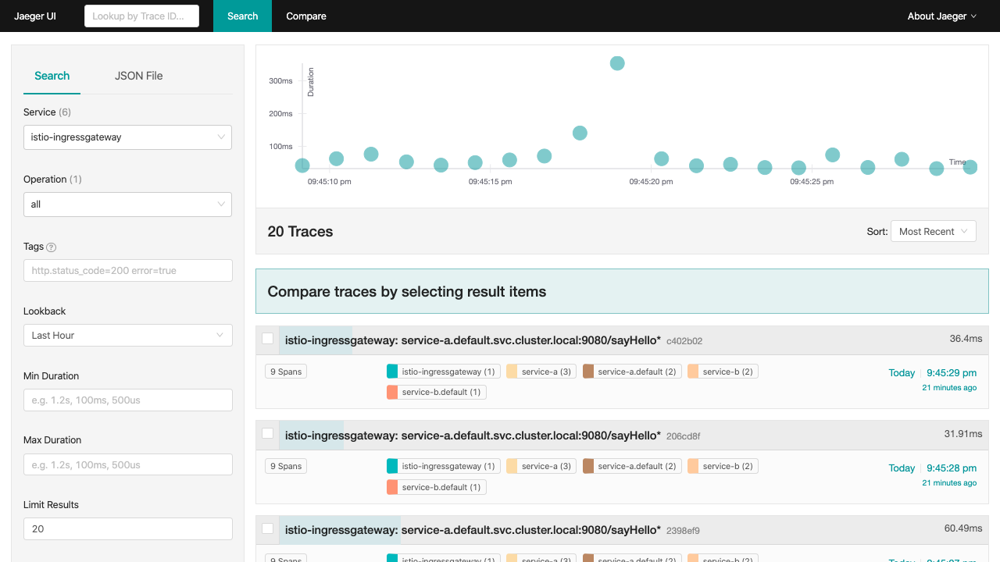

Using Jaeger in Service Mesh(Istio)
General Instructions
-
Clone the git repository
git clone https://github.com/ibm-cloud-architecture/learning-distributed-tracing-101.git -
Change to the lab directory for Open Liberty
cd learning-distributed-tracing-101
Installing Service Mesh (Istio) Operator
The following operators and tools are installed and configured as part of the Service Mesh installation:
-
Jaeger operator
-
Prometheus, Grafana, and Kiali
With OpenShift 4, you can use the CodeReady Containers to set up a local development cluster
Verify Service Mesh installation
-
Verify that istio components are installed in the namespace
istio-systemoc get pods -n istio-systemVerify the output:
NAME READY STATUS RESTARTS AGE grafana-57dbfb688d-8rkzm 2/2 Running 0 61m istio-citadel-54f4c55c67-4djdw 1/1 Running 0 65m istio-egressgateway-767484c77f-zcbp5 1/1 Running 0 61m istio-galley-7cbcb5bd98-qzzbg 1/1 Running 0 63m istio-ingressgateway-6dbdc4dbdc-lzxfm 1/1 Running 0 61m istio-pilot-5f5c7dd5b4-nbqsd 2/2 Running 0 62m istio-policy-768ff8c77-qpb4j 2/2 Running 0 63m istio-sidecar-injector-6f5686f954-xlmdv 1/1 Running 0 61m istio-telemetry-64d99945dc-rn5xv 2/2 Running 0 63m jaeger-57776787bc-nd4sg 2/2 Running 0 63m kiali-549ccd69f4-v2rsv 1/1 Running 0 56m prometheus-797855d5cf-wdmct 2/2 Running 0 65m -
Verify services in the namespace
istio-systemoc get services -n istio-systemVerify the output:
NAME TYPE CLUSTER-IP EXTERNAL-IP PORT(S) AGE grafana ClusterIP 172.30.28.190 <none> 3000/TCP 61m istio-citadel ClusterIP 172.30.120.72 <none> 8060/TCP,15014/TCP 65m istio-egressgateway ClusterIP 172.30.147.31 <none> 80/TCP,443/TCP,15443/TCP 62m istio-galley ClusterIP 172.30.218.118 <none> 443/TCP,15014/TCP,9901/TCP 64m istio-ingressgateway ClusterIP 172.30.35.42 <none> 15020/TCP,80/TCP,443/TCP,15443/TCP 62m istio-pilot ClusterIP 172.30.225.60 <none> 15010/TCP,15011/TCP,8080/TCP,15014/TCP 62m istio-policy ClusterIP 172.30.157.199 <none> 9091/TCP,15004/TCP,15014/TCP 63m istio-sidecar-injector ClusterIP 172.30.155.62 <none> 443/TCP 61m istio-telemetry ClusterIP 172.30.118.27 <none> 9091/TCP,15004/TCP,15014/TCP,42422/TCP 63m jaeger-agent ClusterIP None <none> 5775/TCP,5778/TCP,6831/TCP,6832/TCP 64m jaeger-collector ClusterIP 172.30.172.121 <none> 9411/TCP,14250/TCP,14267/TCP,14268/TCP 64m jaeger-collector-headless ClusterIP None <none> 9411/TCP,14250/TCP,14267/TCP,14268/TCP 64m jaeger-query ClusterIP 172.30.81.233 <none> 443/TCP 64m kiali NodePort 172.30.129.56 <none> 20001:30998/TCP 60m prometheus ClusterIP 172.30.153.80 <none> 9090/TCP 65m zipkin ClusterIP 172.30.102.53 <none> 9411/TCP 64m -
Verify that the ServiceMeshMemberRoll includes the target namespace for example
defaultas one of theMEMBERSoc get ServiceMeshMemberRoll -n istio-system NAME MEMBERS default [default bookinfo] -
Verify routes to the different UI dashboards for Jaeger, Grafana, and Kiali
oc get route -n istio-systemVerify the output, make sure
jaeger-queryis usingedgefor tls termination, if not you can useoc edit service jaeger-query -n istio-systemand change it.NAME HOST/PORT PATH SERVICES PORT TERMINATION WILDCARD grafana grafana-istio-system.apps-crc.testing grafana <all> reencrypt None istio-ingressgateway istio-ingressgateway-istio-system.apps-crc.testing istio-ingressgateway 8080 None jaeger jaeger-istio-system.apps-crc.testing jaeger-query <all> edge None kiali kiali-istio-system.apps-crc.testing kiali <all> reencrypt None prometheus prometheus-istio-system.apps-crc.testing prometheus <all> reencrypt None-
Open the different UIs in the browser using the route’s values for HOST/PORT
-
Build the Applications
The next step is to build the applications inside OpenShift so that they become available in the OpenShift registry for the deployment in the next section:
# still using the "learning-distributed-tracing-101" directory
oc new-build . --strategy=docker --context-dir=lab-jaeger-istio-ol/service-a --name service-a-openliberty-istioYou can follow the build progress through the OpenShift console from the "Developer" perspective, then clicking on "Builds" and selecting the corresponding build name (service-a), then selecting the Logs tab.
You can also follow the build progress via command-line, with this command:
oc logs -f bc/service-a-openliberty-istioYou should see the following message upon build completion:
... Writing manifest to image destination Storing signatures Successfully pushed image-registry.openshift-image-registry.svc:5000/default/service-a-openliberty-istio@sha256:14dc4b440e94066818d1ac9d4b06132d61c61a347c5230971159e059c9adf5de Push successful
You can safely ignore these warning messages:
time="2020-03-18T19:15:00Z" level=warning msg="pkg/chroot: error unmounting \"/tmp/buildah888423814/mnt/rootfs\": error checking if \"/tmp/buildah888423814/mnt/rootfs/sys/fs/cgroup/cpuset\" is mounted: no such file or directory"
Now build service-b:
# still using the "learning-distributed-tracing-101" directory
oc new-build . --strategy=docker --context-dir=lab-jaeger-istio-ol/service-b --name service-b-openliberty-istioOnce again, you can follow the build progress via OpenShift console or by observing the build logs with the following command:
oc logs -f bc/service-b-openliberty-istioAfter both builds are completed, proceed to deploy the application.
Deploy the Applications
-
Deploy the services
service-aandservice-bUse the file
istio-openliberty.yamlfor JavaHere is an example:
cd lab-jaeger-istio-ol oc apply -f istio-openliberty.yaml -n defaultLet’s look at the file content on how the services are defined to be deployed into OpenShift cluster:
--- apiVersion: v1 kind: Service metadata: name: service-a labels: app: service-a spec: ports: - port: 9080 name: http selector: app: service-a --- apiVersion: apps/v1 kind: Deployment metadata: name: service-a labels: app: service-a version: v1 spec: replicas: 1 selector: matchLabels: app: service-a template: metadata: labels: app: service-a version: v1 annotations: sidecar.istio.io/inject: "true" spec: containers: - name: app image: image-registry.openshift-image-registry.svc:5000/default/service-a-openliberty-istio env: - name: JAEGER_ENDPOINT value: http://jaeger-collector.istio-system.svc:14268/api/traces - name: JAEGER_PROPAGATION value: b3 - name: SERVICE_FORMATTER value: service-b - name: JAEGER_REPORTER_LOG_SPANS value: "true" - name: JAEGER_SAMPLER_TYPE value: const - name: JAEGER_SAMPLER_PARAM value: "1" imagePullPolicy: Always ports: - containerPort: 9080 --- apiVersion: v1 kind: Service metadata: name: service-b labels: app: service-b spec: ports: - port: 9081 name: http selector: app: service-b --- apiVersion: apps/v1 kind: Deployment metadata: name: service-b labels: app: service-b version: v1 spec: replicas: 1 selector: matchLabels: app: service-b template: metadata: labels: app: service-b version: v1 annotations: sidecar.istio.io/inject: "true" spec: containers: - name: app image: image-registry.openshift-image-registry.svc:5000/default/service-b-openliberty-istio env: - name: JAEGER_ENDPOINT value: http://jaeger-collector.istio-system.svc:14268/api/traces - name: JAEGER_PROPAGATION value: b3 - name: JAEGER_REPORTER_LOG_SPANS value: "true" - name: JAEGER_SAMPLER_TYPE value: const - name: JAEGER_SAMPLER_PARAM value: "1" imagePullPolicy: Always ports: - containerPort: 9081In the YAML deployment manifest there are few items to point out:
-
Ports
-
The port for the container is specified in the service and the container in the deployment, for example,
service-awith port9080andservice-bwith port9081
-
-
Environment Variables
-
The variable
JAEGER_ENDPOINTis specified to indicate to the Jaeger client library to send the traces using http to the jaeger collector servicehttp://jaeger-collector.istio-system.svc:14268/api/tracesthat is deployed on the namespaceistio-system. -
The variable
SERVICE_FORMATTERused byservice-ato indicate the hostname ofservice-bthat will use to format the hello message. -
The variable
JAEGER_PROPAGATIONis set tob3this is necessary because the Envoy proxy does not recognize Jaeger’s default on-the-wire representation of the trace context, but it does recognize Zipkin’s B3 headers. This configuration instructs the Jaeger tracer to use B3 headers instead of its default ones. -
The variable
JAEGER_REPORTER_LOG_SPANSis set to "true". It instructs the Jaeger reporter to log finished span IDs. The reporter may need to be given a Logger for this option to take effect. -
The variable
JAEGER_SAMPLER_TYPEis set toconst, which indicates the constant sampling pattern, as defined here. -
The variable
JAEGER_SAMPLER_PARAMis set to 1, which in combination with the constant sampling pattern, means 100% of the spans will be reported to the Jaeger backend.
-
-
Istio has certain specific requirements. The ones we used in our YAML manifest are the following
-
Named service ports
-
The service port name starts with
http
-
-
Deployment with app and version labels
-
The Pod template should have the following labels defined
appandversion
-
-
-
-
The
pom.xmlfor each service contains the Jaeger client dependency, which can also handle the headers generated by the Istio Envoy proxy forwards, thus allowing for end to end propagation. The source code is available in their respective directoriesservice-aandservice-b, the dependency related to OpenTracing in the filepom.xmlfor the service looks like this:<dependency> <groupId>io.jaegertracing</groupId> <artifactId>jaeger-client</artifactId> <version>0.34.0</version> </dependency> -
Deploy the Istio Gateway and VirtualService
oc apply -f gateway.yaml -n defaultHere is the content of
gateway.yamlapiVersion: networking.istio.io/v1alpha3 kind: Gateway metadata: name: distributing-tracing-gateway spec: selector: istio: ingressgateway # use istio default controller servers: - port: number: 80 name: http protocol: HTTP hosts: - "*" --- apiVersion: networking.istio.io/v1alpha3 kind: VirtualService metadata: name: distributing-tracing spec: hosts: - "*" gateways: - distributing-tracing-gateway http: - match: - uri: prefix: /sayHello route: - destination: host: service-a port: number: 9080 -
Verify services are deployed and running:
oc get all -l app=service-a -n default oc get all -l app=service-b -n default NAME READY STATUS RESTARTS AGE pod/service-a-799d4dc5f8-v7l74 2/2 Running 0 19m pod/service-b-5c45ff88d-dr7cl 2/2 Running 0 23m NAME TYPE CLUSTER-IP EXTERNAL-IP PORT(S) AGE service/service-a ClusterIP 172.30.243.210 <none> 9080/TCP 19m service/service-b ClusterIP 172.30.40.248 <none> 9081/TCP 23m NAME READY UP-TO-DATE AVAILABLE AGE deployment.apps/service-a 1/1 1 1 19m deployment.apps/service-b 1/1 1 1 23m NAME DESIRED CURRENT READY AGE replicaset.apps/service-a-799d4dc5f8 1 1 1 19m replicaset.apps/service-b-5c45ff88d 1 1 1 23mNotice that under the
READYcolumn for pods, it shows that there are two (2/2) containers running, one of them is the istio sidecar proxy. -
Get the hostname for the Istio ingress gateway
oc get route -n istio-system istio-ingressgateway NAME HOST/PORT PATH SERVICES PORT TERMINATION WILDCARD istio-ingressgateway istio-ingressgateway-istio-system.apps-crc.testing istio-ingressgateway 8080 None -
Use curl or open a browser with the endpoint URL using the HOST/PORT of the route
curl http://istio-ingressgateway-istio-system.apps-crc.testing/sayHello/CarlosNotice in the output that the message was formatted by service-b
Hello, from service-b Carlos!From the result, you can see that
service-acallsservice-band replies back. -
In the Jaeger UI select
istio-ingressgatewayorservice-aand click Find TracesYou can see 7 Spans in a single trace starting from the
istio-ingressgatewayending inservice-b.default -
Click on one of the traces and expand the spans in the trace

Check one of the labs Lab Jaeger - Node.js or Lab Jaeger - Open Liberty for a more in-depth lab for Opentracing with Jaeger.
-
In the Kiali UI select Graph to see a topology view of the services, you can enable traffic animation under Display to see the flow of http requests

-
In the Grafana UI select the Dashboard Istio Workload Dashboard or Istio Service Dashboard to see monitoring and metrics data for your services